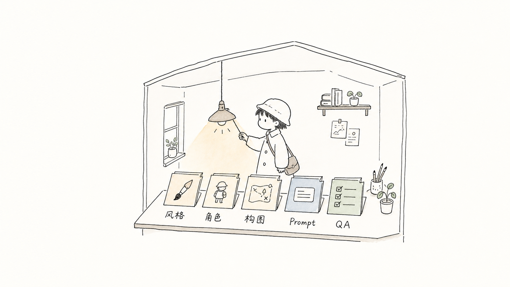

它解决什么问题？What problem does it solve?
普通 AI 配图常常“一次好看，下一次跑偏”。这个项目把经验拆成稳定规则，让同一类文章能持续生成同一种气质的图。Ordinary AI image prompts often work once and drift later. This project turns experience into stable rules so related articles can keep the same visual mood.
这节课用 `japanese-handdrawn-illustrations` 做例子，教你如何调用一个 Codex Skill，也教你如何 fork、改角色、改风格，建立自己的配图系统。 This lesson uses `japanese-handdrawn-illustrations` as the example: first to show how to use a Codex Skill, then to show how to fork it, change the character and style, and build your own illustration system.

它不是“一个好看的提示词”，而是一套让图片风格稳定、可复用、可检查的工作流。 It is not just a pretty prompt. It is a workflow that makes image style consistent, reusable, and checkable.
普通 AI 配图常常“一次好看，下一次跑偏”。这个项目把经验拆成稳定规则，让同一类文章能持续生成同一种气质的图。Ordinary AI image prompts often work once and drift later. This project turns experience into stable rules so related articles can keep the same visual mood.
它默认支持中文短标注，强调“认知锚点”，适合中文文章、教学材料、Obsidian 笔记和医学科普。It supports short Chinese labels and focuses on cognitive anchors, making it useful for Chinese articles, teaching materials, Obsidian notes, and medical explainers.
它有目录结构、职责拆分、模板和验收清单。你改一个模块，就能调整一类输出，而不是每次重写一大段 prompt。It has structure, separated responsibilities, templates, and acceptance checks. Changing one module adjusts a whole class of outputs instead of rewriting a giant prompt every time.
学生可以把它理解成一个“小型创作团队”：每个文件只负责一件事。 Students can understand it as a small creative team: each file has one clear job.
SKILL.md总导演：规定何时触发、工作流和交付方式Director: when to trigger, workflow, and deliverystyle-dna.md美术指导：背景、线条、颜色、留白和禁忌Art direction: background, lines, colors, white space, and rulescharacter-ip.md角色设定：固定“小旅人”的外形和动作职责Character design: keeps the traveler consistent and activecomposition-patterns.md分镜师：提供桌面、车站、雨伞、手账地图等隐喻Storyboard: offers desk, station, umbrella, and notebook-map metaphorsprompt-template.md执行模板：把想法变成单张图片提示词Execution template: turns ideas into one-image promptsqa-checklist.md质检员：判断图是否跑偏，指导迭代QA checker: detects drift and guides iteration
核心方法很简单：安装 skill、给文章、让 Codex 先找认知锚点，再生成或先给 shot list。 The core method is simple: install the skill, provide an article, let Codex find cognitive anchors, then generate images or draft a shot list first.
把仓库里的 skill 文件夹复制到本机 `~/.codex/skills/`，然后开启新的 Codex 会话。Copy the skill folder into `~/.codex/skills/`, then start a new Codex session.
如果还不确定怎么配图，先要 shot list；如果目标明确，就直接要求生成 3-5 张。If the illustration plan is unclear, ask for a shot list first. If the goal is clear, request 3-5 images directly.
重点看：是否 16:9、是否留白、是否有小旅人参与核心动作、是否避免日漫/PPT/商业海报感。Check whether it is 16:9, airy, character-driven, and free from anime, PPT, or commercial-poster drift.
cp -R "skills/japanese-handdrawn-illustrations" "$HOME/.codex/skills/"
Use $japanese-handdrawn-illustrations to design and generate 4 Japanese hand-drawn illustrations for this Chinese article.
Focus on the core cognitive anchors, not one image per paragraph.cp -R "skills/japanese-handdrawn-illustrations" "$HOME/.codex/skills/"
Use $japanese-handdrawn-illustrations to design and generate 4 Japanese hand-drawn illustrations for this Chinese article.
Focus on the core cognitive anchors, not one image per paragraph.
先理解文章要解决什么问题，不急着画。Understand the problem before drawing.
选择“前后变化、分类整理、路径选择、风险保护”等值得视觉化的位置。Select moments like state changes, classification, path choices, or risk protection.
一张图只讲一个核心结构，生成后按 QA 清单修正。Each image explains one core structure, then gets checked and refined.
这些图片不是装饰，而是把抽象规则变得可见。学生可以按“图像表达了哪个模块”来学习。 These images are not decoration. They make abstract rules visible. Students can learn by asking which module each image represents.
说明一个好 skill 要有工具架：风格、角色、构图、模板和 QA 都要有位置。Shows that a good skill needs shelves: style, character, composition, templates, and QA all have their places.
说明出图前要先理解内容，不是随机把文字变成插画。Shows that image generation starts with understanding, not random decoration.
说明 prompt 可以拆成小模块，模块越清楚，修改越容易。Shows that prompts can be modular. Clear modules make editing easier.

说明质量检查像一把伞：挡住跑偏、太满、太像 PPT、太像日漫等问题。Shows QA as an umbrella that blocks drift, clutter, PPT-like layouts, and anime-like style.
最推荐学生做的不是“照抄”，而是 fork 后替换其中几个稳定模块。 The best student project is not copying. Fork it and replace a few stable modules.
保留原有目录结构，这样 Codex 仍然知道如何读取 skill。Keep the folder structure so Codex still knows how to read the skill.
把“小旅人”改成你的固定角色，例如“小医生”“小研究员”“小编辑”。Replace the traveler with your own recurring character, such as a young doctor, researcher, or editor.
改背景、线条、颜色、禁忌和适用场景，但不要一次改太多。Adjust background, line style, colors, constraints, and use cases, but keep each change small.
明确什么叫合格，什么叫跑偏。没有 QA 的生成系统很快会失控。Define what counts as good and what counts as drift. Without QA, generation systems lose control quickly.
1. Fork 这个仓库。
2. 把 skills/japanese-handdrawn-illustrations 改名为你的主题。
3. 修改 SKILL.md：写清楚你的 skill 适合什么任务。
4. 修改 references/character-ip.md：定义固定角色。
5. 修改 references/style-dna.md：定义风格边界和禁忌。
6. 修改 references/composition-patterns.md：写 5-8 个适合你主题的构图隐喻。
7. 修改 references/qa-checklist.md：写出合格标准和失败信号。
8. 用 1 篇真实文章测试，保存示例图和 README 说明。1. Fork this repository.
2. Rename skills/japanese-handdrawn-illustrations to your own theme.
3. Edit SKILL.md: explain what task your skill is for.
4. Edit references/character-ip.md: define a recurring character.
5. Edit references/style-dna.md: define style boundaries and constraints.
6. Edit references/composition-patterns.md: write 5-8 composition metaphors for your topic.
7. Edit references/qa-checklist.md: define success criteria and failure signals.
8. Test with one real article, then save demo images and update the README.一个好的生成式项目，不只是会生成结果，还要能保护结果不跑偏。这个项目的 QA 清单就是那把伞。 A good generative project does more than produce outputs. It protects outputs from drifting. The QA checklist is that umbrella.